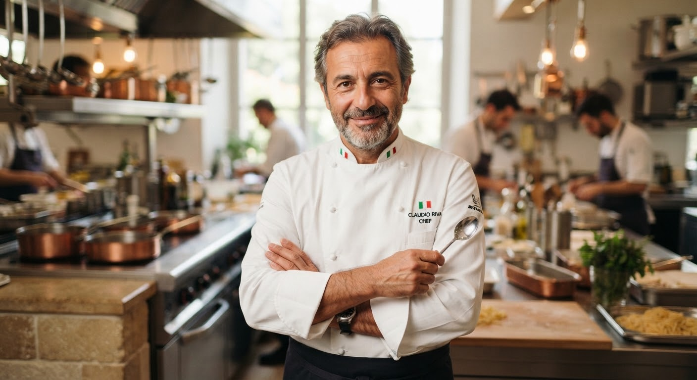
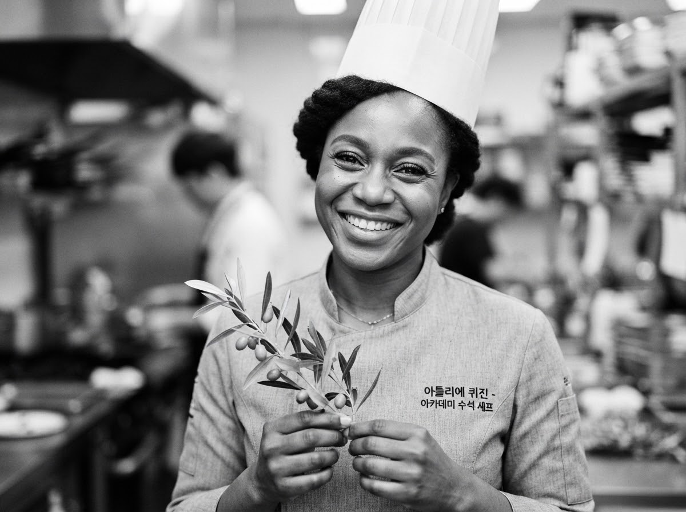
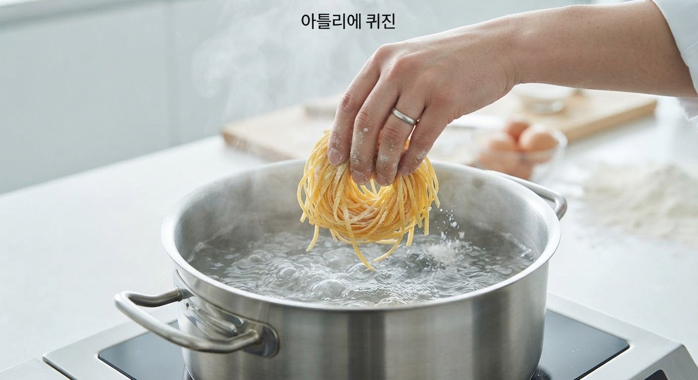
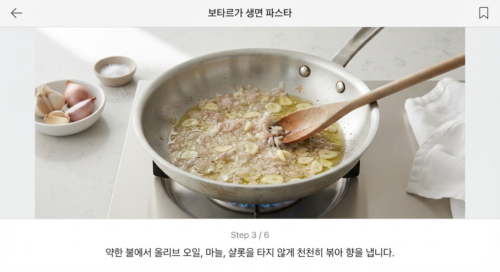
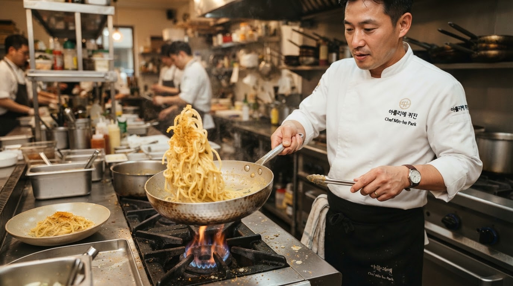
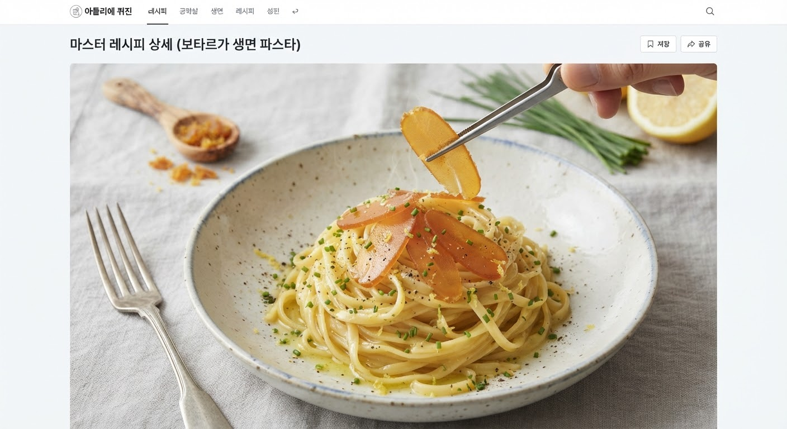
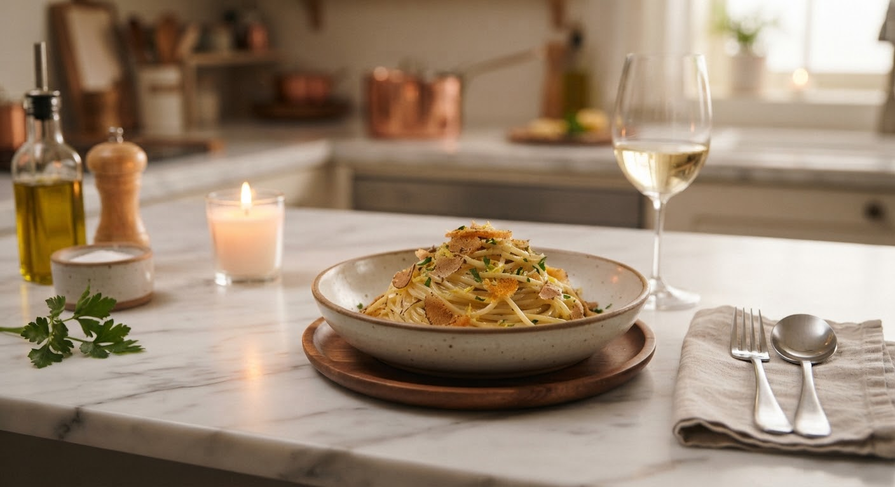
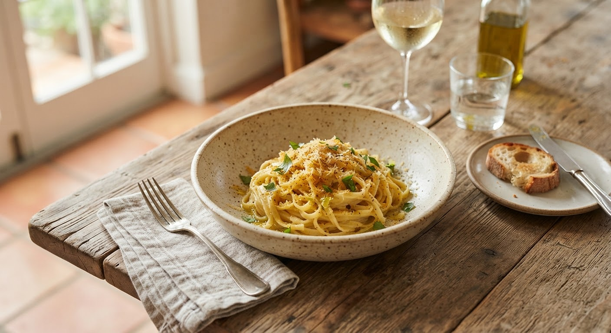
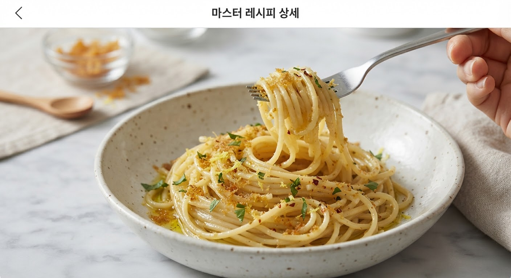

시칠리아산 보타르가와 햇올리브오일 생면 탈리올리니
“지중해 바다의 응축된 감칠맛과 10월 첫 수확한 햇올리브오일의 싱그러운 풀내음이 유화된 극상의 실키 텍스처. 단순함 속에 숨겨진 완벽한 밸런스를 경험해보세요.”

미장플라스 & 정밀 식재료 계량
원하는 서빙 인원수를 선택하시면 비율에 맞추어 식재료 계량값이 실시간 동기화됩니다.
어란은 열에 닿는 순간 단백질이 응고되어 쓴맛이 올라옵니다. 조리 직전까지 차갑게 보관하고, 강판에 갈아둔 파우더 반은 불을 끈 뒤 섞고, 반은 서빙 직전 생으로 올려야 향이 극대화됩니다.

“만테카투라(Mantecatura) 유화 시 팬 온도를 70℃로 낮추세요”
팔팔 끓는 팬에 어란을 넣으면 고급 숭어 어란 특유의 플로럴한 바다 향이 날아가고 비린 향만 남습니다. 면수를 부은 직후 불을 끄고 5초간 팬을 흔들어 온도를 70도 언더로 떨어뜨린 후 어란을 투하하는 것이 밀라노와 카글리아리 레스토랑의 핵심 시크릿입니다.
마스터 셰프 단계별 조리 가이드
총 4단계로 완벽하게 복원하는 이탈리안 하이엔드 테크닉. 각 단계의 인터랙티브 타이머와 체크 박스를 활용하세요.

STEP 01생면 알덴테(Al dente) 삶기 & 농후한 전분 면수 확보
큰 냄비에 물 2L와 천일염 20g(1% 염도)을 넣고 격렬히 끓입니다. 세몰리나 생면 탈리올리니를 털어 넣고 정확히 2분 30초에서 3분간 삶아 심지가 살짝 느껴지는 알덴테 상태로 건져냅니다.
★ 셰프 포인트: 건면과 달리 생면은 순식간에 익으므로 타이머가 울리기 20초 전 반드시 면의 탄력을 씹어 확인하세요. 면수 1컵(150ml)은 절대 버리지 말고 따로 덜어둡니다.

STEP 02저온 올리브오일에 샬롯과 마늘 아로마 인퓨징
팬에 엑스트라버진 올리브오일 30ml를 두르고 미세하게 다진 샬롯과 으깬 마늘을 넣습니다. 약불에서 절대 갈색으로 태우지 않고 투명해질 때까지 은은하게 볶아 기름에 달콤한 향을 입힙니다.
★ 셰프 포인트: 마늘이 갈색이 되면 어란의 섬세한 향이 묻힙니다. 향이 피어오르면 마늘 알맹이는 건져내고 오일만 남겨 깔끔한 마무리를 만듭니다.

STEP 03전분수와 어란 파우더의 결합, 완벽한 크리미 에멀전
삶아둔 탈리올리니 생면과 따뜻한 면수 80ml를 팬에 투입합니다. 불을 끄고 팬을 70도 이하로 식힌 후 보타르가 파우더의 절반(15g)과 잔여 올리브오일 15ml를 붓습니다. 손목 스냅을 이용해 공기를 주입하듯 격렬하게 흔들어 실키한 에멀전 코팅을 완성합니다.
★ 셰프 포인트: 팬 바닥에 오일이 분리되어 겉돌지 않고 국물이 버터처럼 녹진하게 면에 착 달라붙는 순간이 바로 만테카투라의 완성입니다.

STEP 04높이감 있는 트월 플레이팅, 생 어란 슬라이스와 레몬 제스트
데워둔 파스타 볼에 핀셋을 사용하여 면을 볼륨감 있게 똬리 틀어 담습니다. 남은 생 보타르가를 얇게 슬라이스하여 면 상단에 올리고, 마이크로플레인으로 유기농 레몬 껍질을 곱게 갈아 뿌린 뒤 송송 썬 차이브로 산뜻함을 완성합니다.
★ 셰프 포인트: 따뜻한 면의 열기로 레몬 오일과 생 어란이 살짝 땀을 흘리듯 녹아내릴 때 첫 포크를 감아 입에 넣으세요.
테이블을 완성하는 미식 페어링 큐레이션
보타르가의 짭조름한 바다의 미네랄과 농후한 오일감을 완벽하게 씻어내고 입안을 리프레시해줄 사이드 디시와 와인입니다.
홈셰프들의 리얼 조리 기록 & 포토 피드

“셰프님이 강조하신 70도 유화 팁이 진짜 신의 한 수였어요! 예전엔 어란 넣으면 뭉치고 비렸는데 이번엔 면에 버터 바른 듯이 싹 감겨서 레스토랑 맛이 났습니다.”

“아틀리에 마켓 식재료 원클릭 장바구니로 구매해서 주말 기념일에 만들었습니다. 세몰리나 생면 삶는 타이머 맞춰서 딱 2분 40초 끊으니까 식감이 환상이네요.”

“레몬 제스트 마지막에 올리는 게 킥입니다. 사르데냐에서 먹었던 로컬 트라토리아 맛 그대로 살아났어요. 베르멘티노 와인이랑 꼭 드셔보시길 추천합니다.”